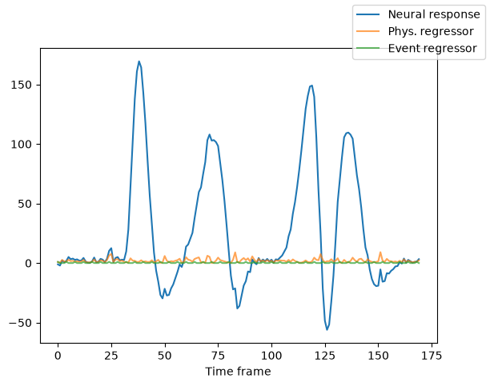
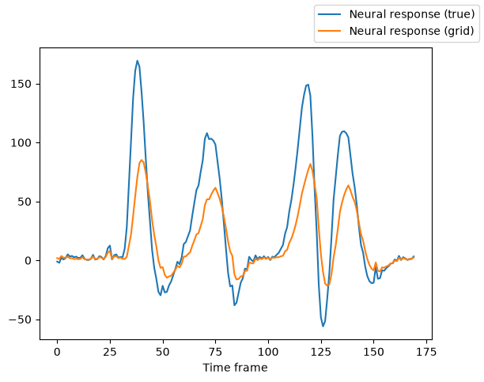
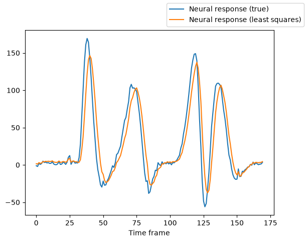
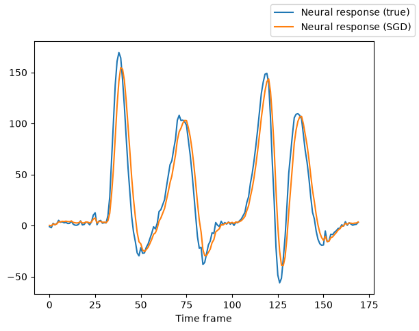

Adding regressors to a model¶
Author: Malte Lüken (m.luken@esciencecenter.nl)
Difficulty: Intermediate
This tutorial explains how to add regressors to model predictions. Regressors are continuous or discrete timecourses that are parallel to the observed neural time course. They can represent nuisances (e.g., head-motion) or events in an experiment (e.g., button presses) that are recorded together with the neural response. In prfmodel, regressors are added after scaling the predicted neural response (if scaling is included in the model) in a general linear model framework:
Two types of regressors are currently implemented:
Additive regressors: These are directly added to the predicted neural response (weighted by a \(\beta\) parameter) and are expected to be in the space of the neural response. Drift, motion, and physiological signals are typical examples for additive regressors.
Convolved regressors: These are first convolved with an impulse response from an impulse model and then added to the predicted neural response (also weighted by a \(\beta\) parameter). Convolved regressors can be in a different space from the neural response. Task events are typical examples for convolved regressors.
The regressor \(\beta\) weights can be estimated with least squares together with scaling parameters.
An example with a population receptive field model¶
Let’s illustrate with a simulated example how to include regressors in a population receptive field (pRF) model.
We first load a pRF stimulus that contains a bar moving vertically and horizontally on a 2D screen.
from prfmodel.examples import load_2d_prf_bar_stimulus
stimulus = load_2d_prf_bar_stimulus()
print(stimulus)
PRFStimulus(design=array[170, 128, 128], grid=array[128, 128, 2], dimension_labels=['y', 'x'])
WARNING: All log messages before absl::InitializeLog() is called are written to STDERR
I0000 00:00:1786610900.541608 4563 cudart_stub.cc:31] Could not find cuda drivers on your machine, GPU will not be used.
I0000 00:00:1786610900.587845 4563 cpu_feature_guard.cc:227] This TensorFlow binary is optimized to use available CPU instructions in performance-critical operations.
To enable the following instructions: AVX2 FMA, in other operations, rebuild TensorFlow with the appropriate compiler flags.
WARNING: All log messages before absl::InitializeLog() is called are written to STDERR
I0000 00:00:1786610901.850273 4563 cudart_stub.cc:31] Could not find cuda drivers on your machine, GPU will not be used.
When printing the loaded stimulus, we see that it has a design matrix with 200 time frames (first dimension). We can simulate a physiological nuisance signal (i.e., additive regressor) parallel to the design.
import numpy as np
rng = np.random.default_rng(2026)
regressor_phys = rng.gamma(shape=2, scale=1, size=stimulus.design.shape[0])
print(regressor_phys.shape)
(170,)
We can also simulate a task event regressor (i.e., convolved regressor).
regressor_event = np.zeros_like(regressor_phys)
regressor_event[::4] = 1 # Every fourth frame an event occurs
Now, we create a canonical Gaussian 2D model and add both regressors to it. As part of this step, we create an impulse
model that we use both in the canonical model and the convolved regressor (these can also be different). In the
canonical model, we wrap our regressor submodels in a list to chain them
together and supply as the regressors_model argument.
from prfmodel.impulse import DerivativeTwoGammaImpulse
from prfmodel.models.prf import Gaussian2DPRFModel
from prfmodel.regressors import AdditiveRegressors, ConvolvedRegressors
impulse_model = DerivativeTwoGammaImpulse()
# Regressor names can be arbitrary but must match columns names supplied at prediction
additive_regressors = AdditiveRegressors(names=["reg_phys"])
convolved_regressors = ConvolvedRegressors(
names=["reg_event"],
impulse_model=impulse_model, # We use the same impulse model as in canonical model
)
prf_model = Gaussian2DPRFModel(
impulse_model=impulse_model,
regressors_model=[additive_regressors, convolved_regressors],
)
Let’s define a set of model parameters and make a model prediction. We must supply the regressors as a data frame to the prediction function and add a beta weight for each regressor to the parameters data frame.
import pandas as pd
true_params = pd.DataFrame({
"mu_x": [-1.4],
"mu_y": [2.3],
"sigma": [2.0],
# delay, dispersion, undershoot, u_dispersion, and ratio use the default Glover HRF parameters
"weight_deriv": [-1.5],
"amplitude": [2.0],
"baseline": [0.0],
"beta_reg_phys": [1.7],
"beta_reg_event": [-2.5],
})
regressors = pd.DataFrame({
"reg_phys": regressor_phys,
"reg_event": regressor_event,
})
true_response = np.asarray(prf_model(
stimulus=stimulus,
parameters=true_params,
regressors=regressors,
))
E0000 00:00:1786610903.617871 4563 cuda_platform.cc:52] failed call to cuInit: INTERNAL: CUDA error: Failed call to cuInit: UNKNOWN ERROR (303)
We can plot the predicted response and the regressors.
import matplotlib.pyplot as plt
fig, ax = plt.subplots()
ax.plot(true_response.T, label="Neural response")
ax.plot(regressor_phys, alpha=0.7, label="Phys. regressor")
ax.plot(regressor_event, alpha=0.7, label="Event regressor")
ax.set_xlabel("Time frame")
fig.legend();

We can see that the predicted neural response contains some “noise” coming from the two regressors.
Our next goal is to fit the model back to its own predicted neural timecourse. We first use a grid search to optimize
the center and size of the Gaussian pRF (i.e., mu_x, mu_y, sigma). By default, the GridFitter uses a
correlation loss function that ignores differences in baseline and amplitude between model predictions and data.
from prfmodel.fitters import GridFitter
param_grid = {
"mu_x": np.linspace(-3.0, 3.0, 20),
"mu_y": np.linspace(-3.0, 3.0, 20),
"sigma": np.linspace(0.5, 5.0, 20),
"weight_deriv": [0.5],
"amplitude": [1.0],
"baseline": [0.0],
"beta_reg_phys": [1.0],
"beta_reg_event": [1.0],
}
grid_fitter = GridFitter(
model=prf_model,
stimulus=stimulus,
)
_, grid_params = grid_fitter.fit(
data=true_response,
parameter_values=param_grid,
batch_size=20,
regressors=regressors,
)
grid_params
| mu_x | mu_y | sigma | weight_deriv | amplitude | baseline | beta_reg_phys | beta_reg_event | |
|---|---|---|---|---|---|---|---|---|
| 0 | -1.421053 | 2.052632 | 1.921053 | 0.5 | 1.0 | 0.0 | 1.0 | 1.0 |
We can use the estimated parameters from the grid search to predict a neural response and compare it to the true neural time course.
grid_response = np.asarray(prf_model(
stimulus=stimulus,
parameters=grid_params,
regressors=regressors,
))
fig, ax = plt.subplots()
ax.plot(true_response.T, label="Neural response (true)")
ax.plot(grid_response.T, label="Neural response (grid)")
ax.set_xlabel("Time frame")
fig.legend();

We can see that the grid-search-based prediction closely follows the shape of the true time course but that there are still some differences in the scale of the peaks.
We can correct the scaling of the prediction by optimizing the amplitude and regressor \(\beta\) weights with least squares.
from prfmodel.fitters import LeastSquaresFitter
ls_fitter = LeastSquaresFitter(
model=prf_model,
stimulus=stimulus,
)
_, ls_params = ls_fitter.fit(
data=true_response,
parameters=grid_params, # Use grid parameters as base
slope_name=["amplitude", "beta_reg_phys", "beta_reg_event"],
intercept_name="baseline",
regressors=regressors,
)
ls_params
| mu_x | mu_y | sigma | weight_deriv | amplitude | baseline | beta_reg_phys | beta_reg_event | |
|---|---|---|---|---|---|---|---|---|
| 0 | -1.421053 | 2.052632 | 1.921053 | 0.5 | 1.705656 | 3.295619 | 0.80427 | -2.373435 |
Again, we can make a prediction with the least squares parameters and compare it against the true timecourse.
ls_response = np.asarray(prf_model(
stimulus=stimulus,
parameters=ls_params,
regressors=regressors,
))
fig, ax = plt.subplots()
ax.plot(true_response.T, label="Neural response (true)")
ax.plot(ls_response.T, label="Neural response (least squares)")
ax.set_xlabel("Time frame")
fig.legend();

We see that the least-squares-based prediction aligns with the true timecourse in scale but is shifted to the right.
To finetune the model fit, we can use Stochastic Gradient Descent (SGD) with least-squares estimates as starting values.
Important: The regressor beta weights are treated as normal parameters during SGD (i.e., there is no on-the-fly least-squares optimization of the beta weights at each SGD step).
from prfmodel.fitters import SGDFitter
sgd_fitter = SGDFitter(
model=prf_model,
stimulus=stimulus,
)
_, sgd_params = sgd_fitter.fit(
true_response,
ls_params,
regressors=regressors,
num_steps=500, # To speed up computation; use higher number in practice!
)
We compare predicted SGD timecourses against the true signal and see that they almost perfectly align.
sgd_response = np.asarray(prf_model(
stimulus=stimulus,
parameters=sgd_params,
regressors=regressors,
))
fig, ax = plt.subplots()
ax.plot(true_response.T, label="Neural response (true)")
ax.plot(sgd_response.T, label="Neural response (SGD)")
ax.set_xlabel("Time frame")
fig.legend();

If we compare the SGD parameter estimates against the true parameters, we see that they are very close.
true_params
| mu_x | mu_y | sigma | weight_deriv | amplitude | baseline | beta_reg_phys | beta_reg_event | |
|---|---|---|---|---|---|---|---|---|
| 0 | -1.4 | 2.3 | 2.0 | -1.5 | 2.0 | 0.0 | 1.7 | -2.5 |
sgd_params
| mu_x | mu_y | sigma | weight_deriv | amplitude | baseline | beta_reg_phys | beta_reg_event | |
|---|---|---|---|---|---|---|---|---|
| 0 | -1.447623 | 2.285998 | 2.003391 | 0.019711 | 1.98853 | 2.617058 | 0.71593 | -3.039643 |
Conclusion¶
In this tutorial, we showed how to include additive and convolved regressors that account for nuisance or task-related variables into model predictions. Using a pRF model as an example, we fit a model with both types of regressors to simulated data and evaluated predicted model responses and estimated parameters.